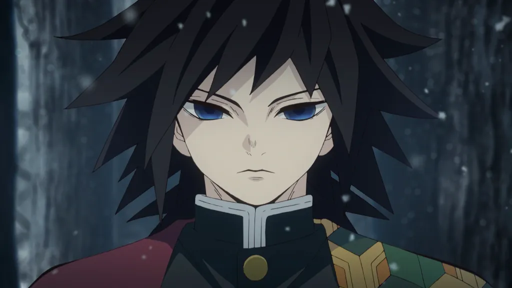
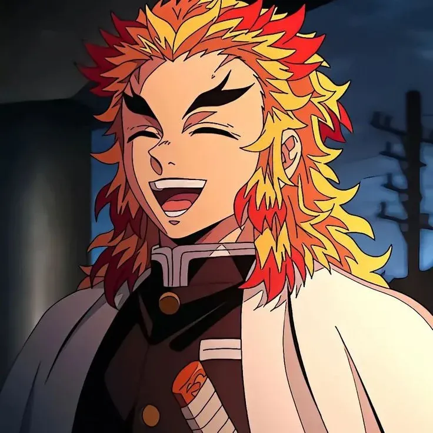
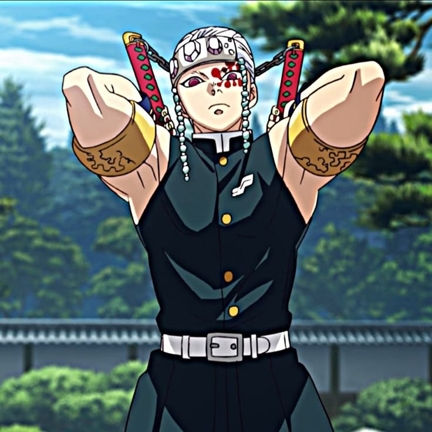
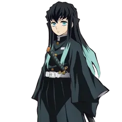
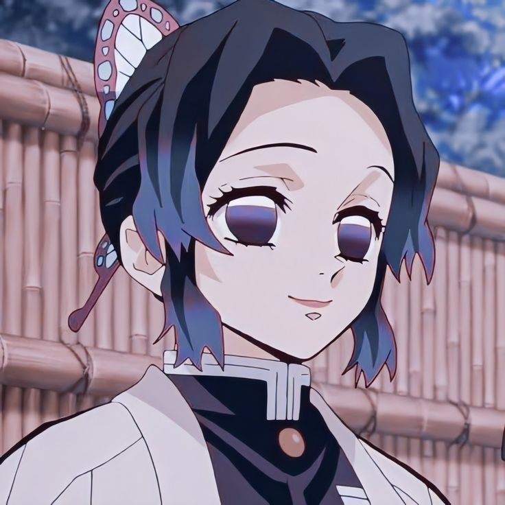
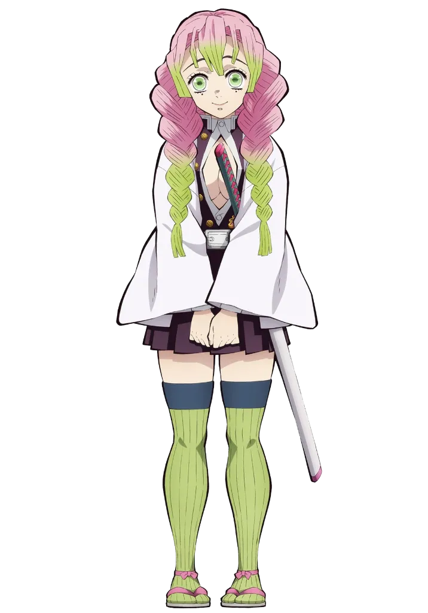
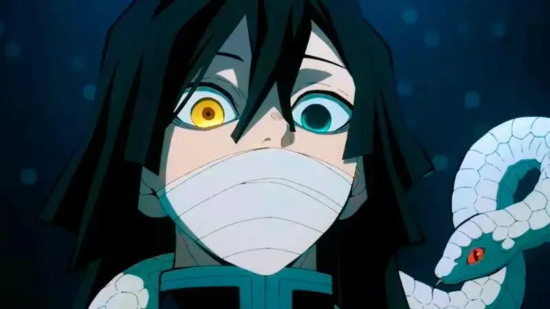
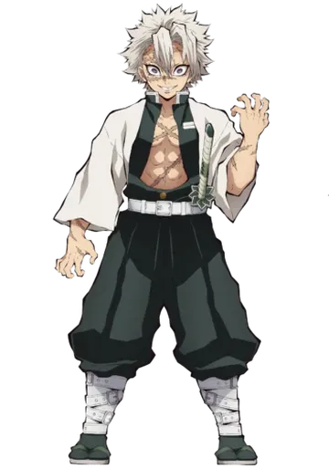
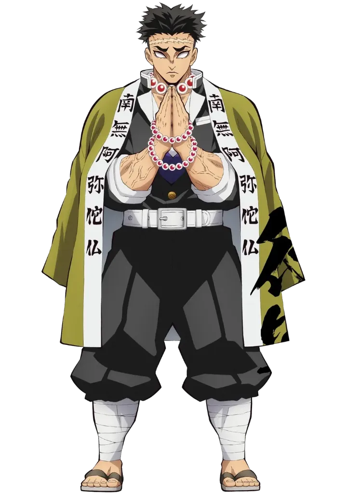

Полный архив вселенной «Клинок, рассекающий демонов». Все 14 стилей дыхания от истоков Солнца до редчайших ветвей, и девять несокрушимых Столпов Кисацутай.
Полная родословная всех 14 стилей дыхания канона Kimetsu no Yaiba: от первородного пламени Солнца до уникальных индивидуальных форм.
Изначальное и самое могущественное дыхание, созданное легендарным мечником Ёриичи Цугикуни. Воспроизводит силу и свет солнечных лучей, нанося демонам незаживающие солнечные ожоги и подавляя их регенерацию. Включает 13 непрерывных форм танца.
Создано братом-близнецом Ёриичи — Мичикацу Цугикуни (Кокушибо). Порождает хаотичные полумесяцы из острейшей плоти и стали, непрерывно меняющие размер и направление рассечения. Насчитывает 16 разрушительных ката.
Самое гибкое и универсальное дыхание. Движения мечника текут плавно, как вода, легко перенаправляя вражеские удары и находя бреши в защите. Включает 10 традиционных форм и 11-ю уникальную форму Гию Томиоки — «Штиль».
Сокрушительные рубящие удары колоссальной взрывной силы, обрушивающиеся подобно неукротимому огню. Требует несокрушимой воли и чистого боевого духа. Кульминация стиля — девятая форма «Чистилище» (Рэнгоку).
Фокусирует силу всего тела в мышцах ног, разгоняя мечника до сверхзвуковой скорости рывка. Удар клинка происходит во мгновение ока и сопровождается громовым раскатом. Фирменная форма — «Молниеносный громовой удар».
Яростные вихревые потоки и смертоносные лезвия сжатого воздуха, рассекающие противника с любой дистанции. Основано на непрерывном атакующем прессинге и ярости, разрывающей плоть демонов на куски.
Самое сложное физически дыхание. Мечник использует землю как точку абсолютной опоры, нанося сокрушительные удары тяжелейшим оружием — топором и шипованным шаром на цепи, перемалывая кости демонов в пыль.
Окутывает поле боя иллюзией непроглядной белой дымки. Мечник обманывает зрительное восприятие противника резкими переходами от медлительных движений к невидимым выпадам. Седьмая форма «Дымка» создана самим Муичиро.
Создано мечницей, не обладающей физической силой для отсечения головы демона. Использует тончайший стилет и серии стремительных жалящих уколов, вводящих в тело врага смертельные дозы яда из цветов глицинии.
Самостоятельно разработано мечником, выросшим среди диких кабанов в горах. Два зазубренных клинка, разрывающие плоть траектории «Клыков» и сверхъестественное осязание кожи, чувствующее малейшие вибрации воздуха.
Сочетает уникальную восьмикратную плотность мышечной ткани мечницы с грацией художественной гимнастики. Использует сверхгибкий ленточный меч ничирин, обвивающий врага словно хлыст на молниеносной скорости.
Имитирует скользящие и извивающиеся атаки ядовитой змеи. Волнообразный клинок крис огибает любые блоки и наносит смертельные уколы через минимальные щели в обороне противника.
Создано элитным шиноби. Использует массивные сдвоенные тесаки на цепи и звуковые пороховые бомбы. Техника «Партитура боя» раскладывает движения врага на ноты, позволяя читать и отбивать любые атаки.
Изящный и грациозный стиль, имитирующий распускающиеся лепестки сакуры. Финальная форма «Алые глаза равноденствия» разгоняет зрение до кинетического предела, замедляя восприятие мира вокруг мечника.
Сильнейшие воины организации Истребителей демонов под началом главы рода Убуяшики. Каждый из них посвятил жизнь защите человечества.

Первый Столп, встретивший Танджиро и Незуко. Невероятно сдержанный и молчаливый мечник, скрывающий тяжелое прошлое. Создал легендарную одиннадцатую форму Дыхания Воды — «Штиль» (Наги), сводящую на нет любые вражеские выпады.

Воплощение доблести, чести и пылающего сердца. Сын бывшего Столпа Пламени, самостоятельно овладевший стилем по старинным свиткам. В битве в Бесконечном Поезде ценой собственной жизни спас всех 200 пассажиров в противостоянии с Третьей Высшей Луной Аказой.

Бывший элитный шиноби, сделавший битвы яркими и эффектными. Обладает абсолютным слухом, сопротивляемостью к ядам и взрывным арсеналом. В Квартале красных фонарей вместе с охотниками одолел Шестую Высшую Луну Даки и Гютаро.

Самый юный вундеркинд в истории Кисацутай — стал Столпом всего через два месяца после начала владения клинком! Прямой потомок клана Цугикуни (Кокушибо), самостоятельно в одиночку сокрушивший Пятую Высшую Луну Гёкко.

Гениальный фармацевт и целитель Поместья Бабочки. Компенсирует нехватку физической силы скоростными колющими ударами шпаги, вводящими в демонов смертоносные яды из глицинии. Ее самопожертвование стало ключом к уничтожению Второй Высшей Луны Доумы.

Девушка с редчайшей плотностью мышц, превосходящей человеческую в 8 раз при невероятной гибкости тела. Сражается длинным гибким клинком-хлыстом, рассекая атаки демонов в грациозном вихре акробатических выпадов.

Скрытный и преданный Столп Змеи. В бою ориентируется с помощью своей верной белой змеи Кабурамару. Его изогнутый кривой клинок крис наносит извивающиеся и непредсказуемые выпады, огибая любые препятствия.

Покрытый боевыми шрамами, свирепый и несокрушимый мечник. Обладает редчайшей кровью Маречи, запах которой опьяняет и парализует демонов. За внешней жестокостью скрывал желание уберечь младшего брата Генью от кошмаров войны.

Безоговорочно сильнейший мечник среди всех девяти Столпов текущей эпохи. Слепой монах гигантского роста с несгибаемой духовной мощью. Сражается массивным шипованным шаром и секирой на железной цепи, ориентируясь по малейшему звуку эха.
Проверь остроту своего клинка ничирин. Нажми кнопку, чтобы нанести рассекающий удар со звуком рассекаемой стали!
Портал входит в состав цифровой экосистемы EcosystemNever. Если ты ищешь надежных союзников для создания эпических проектов — свяжись с нами напрямую!